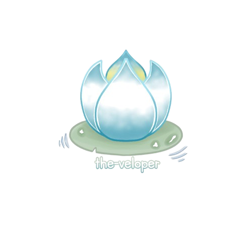
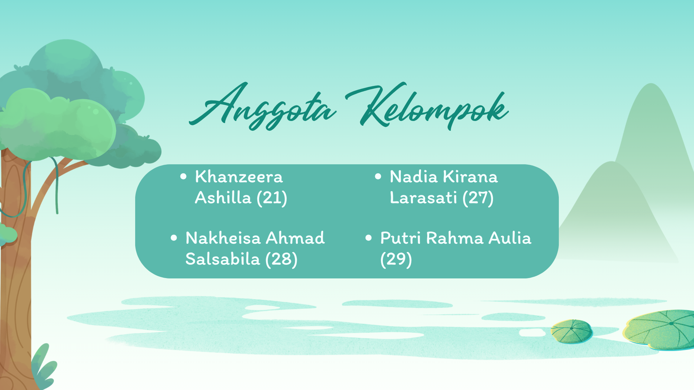

We’re The-Veleoper, a team of curious learners and creators who love exploring ideas, building together, and growing through every challenge.
Logo The-veloper menggambarkan bunga teratai yang membangun pendirian kokoh. Walaupun sering kali mengalami kegagalan, ia akan tetap berdiri tegak dan berusaha memperbaiki kegagalan tersebut. Teratai mengajarkan kita untuk saling bersatu, tetap tenang saat menghadapi permasalahan yang rumit, serta menjaga ketenteraman, persatuan, dan keselarasan di tengah lika-liku kehidupan. bunga teratai juga mengajarkan bahwa kekuatan bukan hanya tentang seberapa kokoh kita berdiri, tetapi juga tentang bagaimana kita mampu bertahan, memperbaiki diri, dan tetap menjaga persatuan tanpa kehilangan jati diri di tengah berbagai kesulitan.